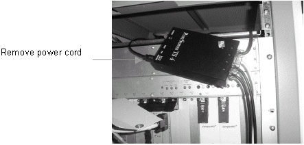

Operating Documentation
Direction 5500113, Rev# 3
Discovery MR450 1.5T Service Methods
Module Version 2.0, Version Date 11/17/08
Operating Documentation |
| Required Persons | Preliminary Reqs | Procedure | Finalization |
|---|---|---|---|
| 1 | Not Applicable | 30 mins | Not Applicable |
The steps that follow describe how to replace and reset a Term Server.
Remove power from the Term Server by removing the power cord (shown in Illustration 1). Remove the cables and note their original location.
Illustration 1: Power Cord

Verify jumper settings for the Term Server. Switch 1 should be in the On or up position, and Switches 2, 3, 4 should be Off or down (see Illustration 2).
Illustration 2: Switch Settings

Record the MAC Address on the replacement Term Server.
If a MAC Address label is attached on the front of the AC Distribution Module, cross out the old MAC Address and write the new MAC Address, found on the replacement Term Server.
Example of MAC Address: 20:2D:90:22:44
Install the replacement Term Server.
To perform a factory reset on the replacement Term Server:
Remove the power connector from the old Term Server.
Press and hold the small square button, labeled Reset, next to the power jack.
Connect power to the replacement Term Server while continuing to press the Reset button.
Continue to press the Reset button until the Power LED blinks on and off in a 1:5:1 sequence.
| NOTE: | If the Reset button is not held in continuously or interrupted by slipping off, the 1:5:1 sequence will not occur. If this happens, press and hold the Reset button until the LED blink sequence is 1:5:1. When the LED illuminates continuously, the IP was received from the Host. |
To change the Term Server MAC Address:
Access the [Guided Install] screen.
Select Network info in the left navigation pane (shown in Step ).
Type the MAC Address in this format: 20:2D:90:22:44 (using colons between every two digits; letters are case sensitive) into the MGD Chassis TermServer MAC Address field shown in Step .
No finalization steps.